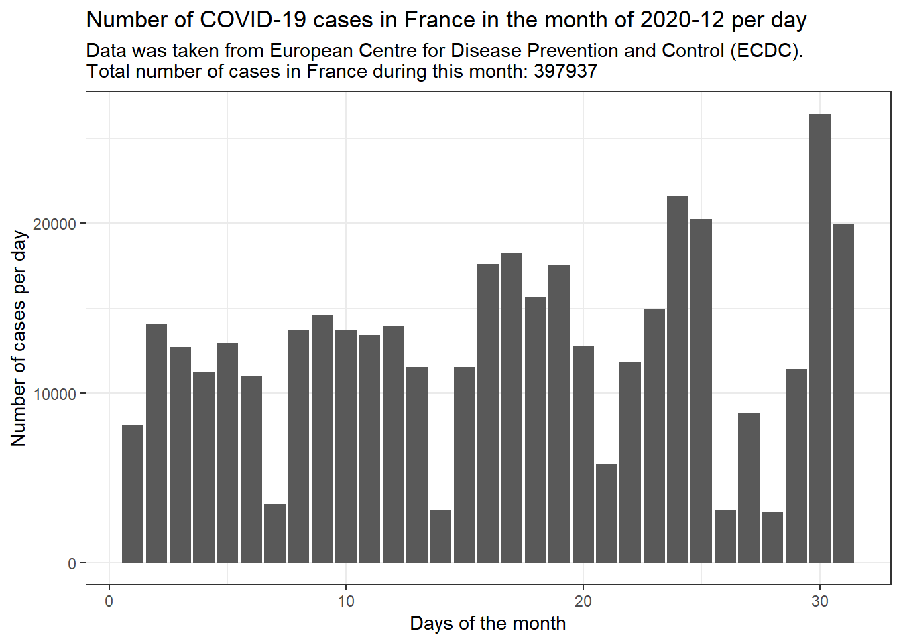
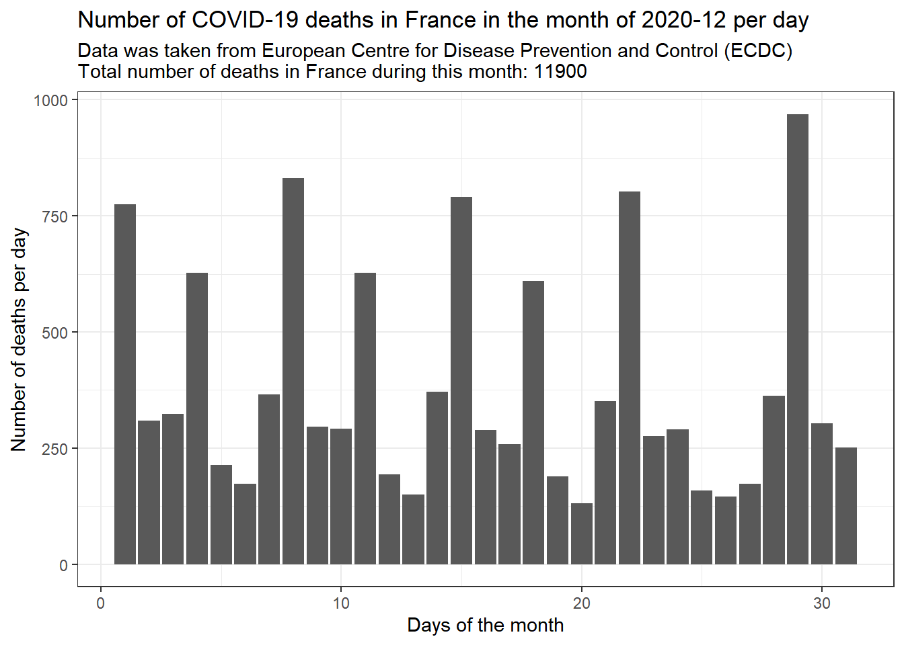

10 Parametrized COVID-19 data
covid_data<-read.csv("https://opendata.ecdc.europa.eu/covid19/nationalcasedeath_eueea_daily_ei/csv/", na.strings = "", fileEncoding = "UTF-8-BOM")
covid_data$year<-as.factor(covid_data$year)
# Filtering gedaan i.v.m. negatieve case/deaths aantallen, aangenomen dat dit een typo was en '-' symbool verwijderd
covid_data$cases<-abs(covid_data$cases)
covid_data$deaths<-abs(covid_data$deaths)
covid_filtered<-covid_data %>% filter(countriesAndTerritories == params$land & year == params$jaar & month == params$maand)
case_plot<-covid_filtered %>% ggplot(aes(x = day,y = cases))+
geom_col()+
labs(title = paste0("Number of COVID-19 cases in ",params$land," in the month of ",params$jaar,"-",params$maand," per day"),
x = "Days of the month",
y = "Number of cases per day",subtitle = paste0("Data was taken from European Centre for Disease Prevention and Control (ECDC).
Total number of cases in ",params$land," during this month: ",sum(covid_filtered$cases)))+
theme_bw()
deaths_plot<-covid_filtered %>% ggplot(aes(x = day,y = deaths))+
geom_col()+
labs(title = paste0("Number of COVID-19 deaths in ",params$land," in the month of ",params$jaar,"-",params$maand," per day"), x = "Days of the month",
y = "Number of deaths per day",subtitle = paste0("Data was taken from European Centre for Disease Prevention and Control (ECDC)
Total number of deaths in ",params$land," during this month: ",sum(covid_filtered$deaths)))+
theme_bw()De code voor het importeren, filteren en plotten van de COVID-19 data zit hierboven. De parameters zijn land, jaar en maand. Dit script werkt niet indien er een list van landen/maanden of jaren wordt toegevoegd. Dus “Netherlands”,“Belgium”zou niet werken.


Indien specifiek het totale aantal cases/deaths per maand nodig was staat de som voor het aantal cases en deaths staat erbij in de subtext.
Video van het gebruik van deze .Rmd
Costa, Federico, José E. Hagan, Juan Calcagno, Michael Kane, Paul Torgerson, Martha S. Martinez-Silveira, Claudia Stein, Bernadette Abela-Ridder, and Albert I. Ko. 2015. “Global Morbidity and Mortality of Leptospirosis: A Systematic Review.” PLOS Neglected Tropical Diseases 9 (9): e0003898. https://doi.org/10.1371/journal.pntd.0003898.
Johnson, Russell C. 1996. “Leptospira.” In Medical Microbiology, edited by Samuel Baron, 4th ed. Galveston (TX): University of Texas Medical Branch at Galveston.
Lehmann, Jason S., Michael A. Matthias, Joseph M. Vinetz, and Derrick E. Fouts. 2014. “Leptospiral Pathogenomics.” Pathogens 3 (2): 280–308. https://doi.org/10.3390/pathogens3020280.
Obels, Ilja, Lapo Mughini-Gras, Miriam Maas, Diederik Brandwagt, Nikita van den Berge, Daan W. Notermans, Eelco Franz, Erika van Elzakker, and Roan Pijnacker. 2025. “Increased Incidence of Human Leptospirosis and the Effect of Temperature and Precipitation, the Netherlands, 2005 to 2023.” Eurosurveillance 30 (15): 2400611. https://doi.org/10.2807/1560-7917.ES.2025.30.15.2400611.
Rajapakse, Senaka, Narmada Fernando, Anou Dreyfus, Chris Smith, and Chaturaka Rodrigo. 2025. “Leptospirosis.” Nature Reviews. Disease Primers 11 (1): 32. https://doi.org/10.1038/s41572-025-00614-5.